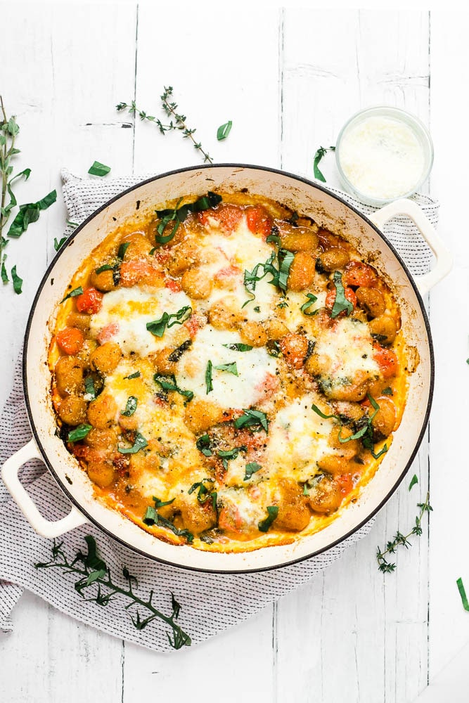

Gnnochi Caprese Recipe

Description
An easy baked gnocchi recipe with slow roasted cherry tomatoes and mozzarella.
A comfort food classic made simple - everything bakes together in one pan!
This dish features the classic caprese combo of fresh tomato, mozzarella and
basil, but it can be customised in a number of ways.
Ingridients
- cherry tomatoes (500g)
- garlic minced (3 cloves)
- thyme leaves fresh (1 tsp)
- oregano leaves fresh (1 Tbsp)
- olive oil (60 ml or 1/4 cup)
- balsamic vinegar (1 Tbsp)
- brown sugar (1/2 tsp)
- dried gnocchi (500 g)
- mozzarela (125 g)
- parmesan - grated (2 Tbsp)
- basil - chopped (handful)
Preparation steps
- Pre-heat the oven to 160C.
- Whisk together the olive oil, balsamic vinegar and sugar.
- Put the cherry tomatoes (whole), thyme, oregano and garlic into a
shallow casserole dish or roasting tin. Pour the olive oil mixture over
the top and mix together to coat the tomatoes.
- Add the dried gnocchi to the pan and mix thorugh.
- Bake for 30 minutes.
- Remove from the oven, stir in the basil and mix around to encourage
the tomatoes to start falling apart.
- Top with mozzarela pieces and a scatter of parmesan.
- Return to the oven for another 30 minutes, until the cheese is browned